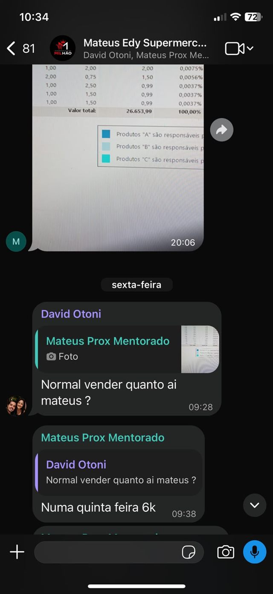
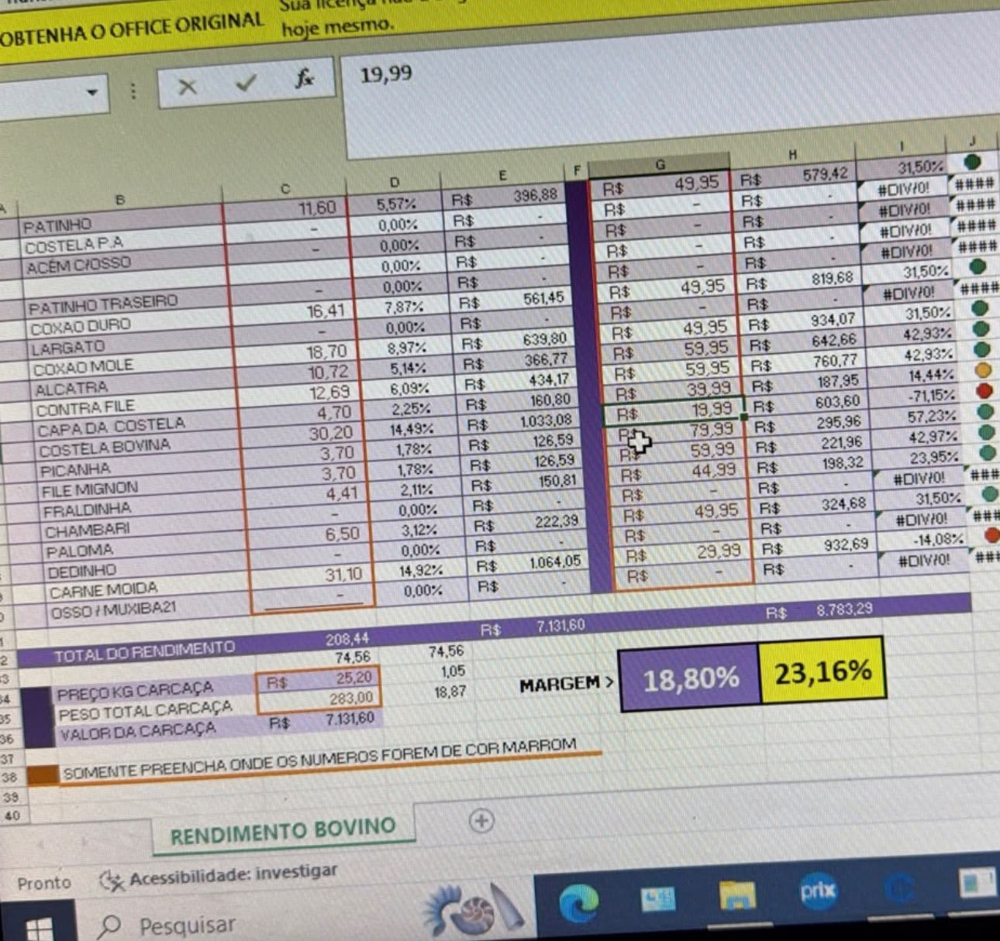

MÉTODO M.A.P.A. DO MILHÃO
Margem, Arrumação, Promoção e Atração: os 4 passos que fazem qualquer supermercado vender mais e, principalmente, ver o dinheiro sobrar no fim do mês.
Quero o Método M.A.P.A.Garantia de 7 dias: se não for para você, devolvo 100% do valor.
Se você é dono de supermercado
Você coloca o preço olhando o concorrente e nunca sabe se ganhou ou perdeu naquele produto.
Paga fornecedor, funcionário e imposto. Quando chega a sua vez, não tem quase nada.
A loja enche no dia da oferta, mas você não sabe se ela deixou lucro ou só prejuízo.
Produto no lugar errado, cliente que não acha o que procura e vai embora levando menos.
Sábado cheio, segunda a sexta vazia. E pouca gente nova conhecendo o seu mercado.
Se você não está lá, nada anda. O sonho de ter o próprio negócio virou uma rotina sem folga.
De cada R$ 100 que entram no seu caixa, você sabe dizer quanto fica com você?
Se a resposta não veio na hora, o problema não é vender pouco. É vender sem um mapa.
Tudo isso ajuda um pouco. Nenhum resolve sozinho.
Ajuda: você não fica mais caro que ele.
Falta: saber se aquele preço dá lucro na sua loja, com os seus custos.
Ajuda: o preço sai rápido.
Falta: entender margem e markup. Quem coloca 50% em cima do custo acha que ganha 50%, mas a margem real é de 33%.
Ajuda: a loja enche.
Falta: um calendário com eventos, datas e produtos certos para a oferta trazer lucro, não só gente.
Ajuda: alguém vê.
Falta: um marketing que faça o vizinho conhecer, entrar e voltar toda semana.
Resultado de quem aplicou


Se você já sabe que é isso que o seu supermercado precisa, a sua condição de lançamento está aqui.
Quero o Método M.A.P.A.MÉTODO M.A.P.A. DO MILHÃO
Cada passo tem aula gravada e uma ferramenta pronta para você aplicar na sua loja.
Você aprende a calcular margem e markup de verdade e a precificar cada produto para ter fama de barato sem perder dinheiro.
Ferramentas: Tabela de Precificação Inteligente e Planilha de Gestão do Açougue
Onde cada produto fica decide quanto ele vende. Você organiza o mix e o espaço para o cliente achar, levar mais e voltar.
Ferramenta: Lista do mix de um supermercado de R$ 1,5 mi/mês
A minha estrutura de vendas, do evento à oferta: como criar eventos, montar o calendário e fazer oferta todos os dias mantendo a margem alta.
Aulas da Mentoria com David
Como fazer a vizinhança conhecer, entrar e comprar toda semana, usando o WhatsApp e o marketing que funcionam no meu supermercado.
Ferramenta: WhatsApp do Milhão
A ferramenta do passo 1
Na Tabela de Precificação Inteligente você coloca o custo e vê a margem e o markup de cada produto, separados por setor.
Tudo o que você recebe
As aulas gravadas do método: estrutura de vendas do evento à oferta, capital de giro, vales com 12% de lucro e aulas extras de tributação e jurídico.
Margem e markup de cada produto, a mesma que eu uso na minha operação.
Rendimento das peças e a margem real do seu açougue.
Como vender todos os dias pelo WhatsApp do seu supermercado.
Compare o seu mix com o de uma operação de alto faturamento e ache o que falta.
Grupo com todos os mentorados para trocar o que está dando certo em cada loja.
MÉTODO M.A.P.A. DO MILHÃO
Valor do método: R$ 3.000
12x de R$ 107,13
ou R$ 997 à vista
Quero o Método M.A.P.A.Entre, assista às aulas e use as ferramentas. Se em até 7 dias você achar que o Método M.A.P.A. não é para você, é só pedir e eu devolvo 100% do valor, sem perguntas.
Quero o Método M.A.P.A.De dono de supermercado para dono de supermercado
Nasci num bairro simples de Anápolis (GO). Meu pai foi embora quando eu tinha 6 anos, e eu cresci vendo a minha mãe trabalhar o dia inteiro. Fui repositor aos 16 e vendedor aos 17.
Na internet eu errei, recomecei e passei dos R$ 100 mil por mês, largando o CLT aos 22. Depois de superar um sequestro e uma depressão, virei sócio de um supermercado que faturava R$ 17 mil por mês.
Arrumei o preço, a loja, as ofertas e o marketing. Hoje a operação fatura mais de R$ 1,5 milhão por mês. O Método M.A.P.A. é esse caminho, organizado em 4 passos.
David Otoni
Sim. Margem, arrumação, promoção e atração valem para qualquer tamanho, do minimercado à rede. O que muda é a escala, não o caminho.
Logo depois da compra você recebe no e-mail os dados de acesso às aulas e aos materiais.
O acesso é vitalício. Você assiste no seu ritmo e volta às aulas sempre que precisar.
Não. O Método M.A.P.A. é formado por aulas gravadas e ferramentas prontas, mais o Grupo VIP com os outros mentorados.
As aulas são gravadas e vão direto ao ponto. Você aplica um passo de cada vez, começando pela margem.
Você tem 7 dias de garantia. Se não for para você, pede o reembolso e recebe 100% do valor.
Cartão de crédito em até 12x ou Pix à vista, pelo checkout seguro.
Eu levei anos para montar esse caminho na minha loja. No Método M.A.P.A. eu te entrego ele pronto, em 4 passos.
Um abraço,
David Otoni